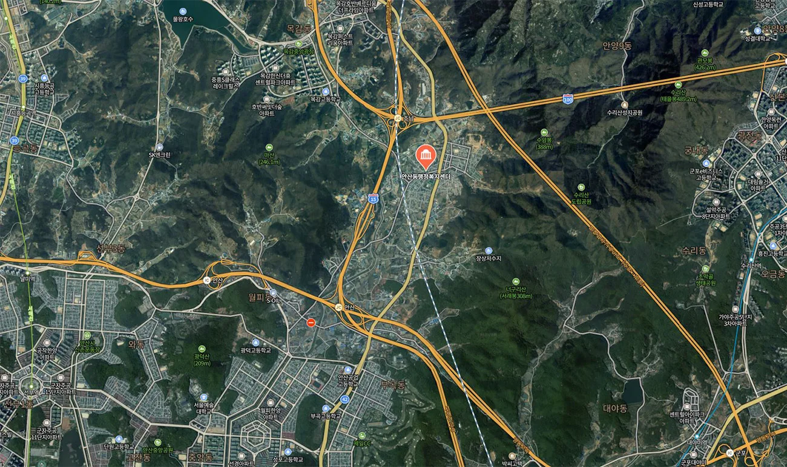
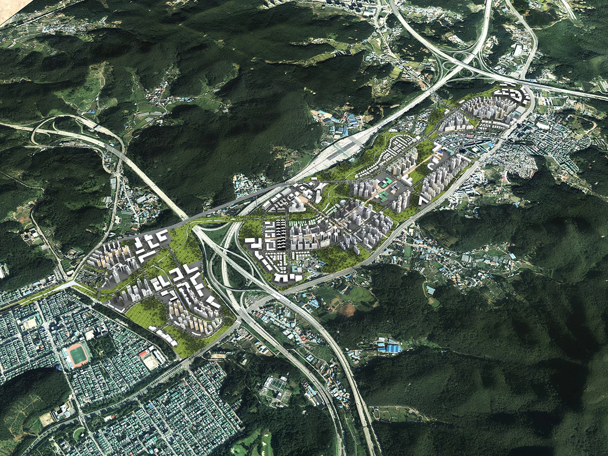
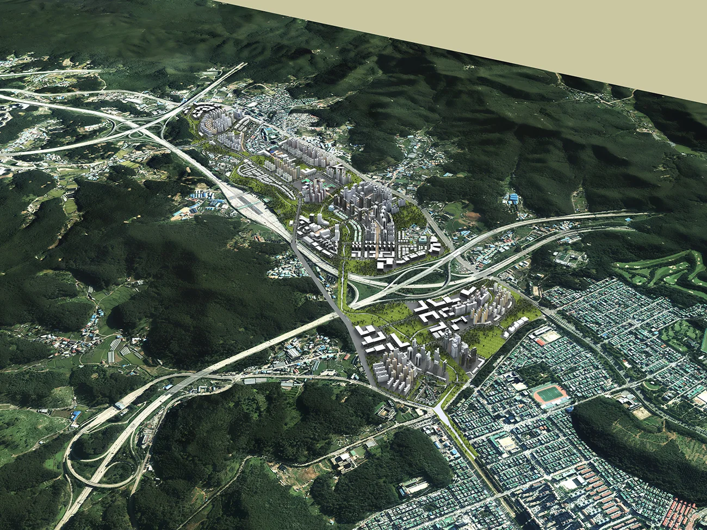
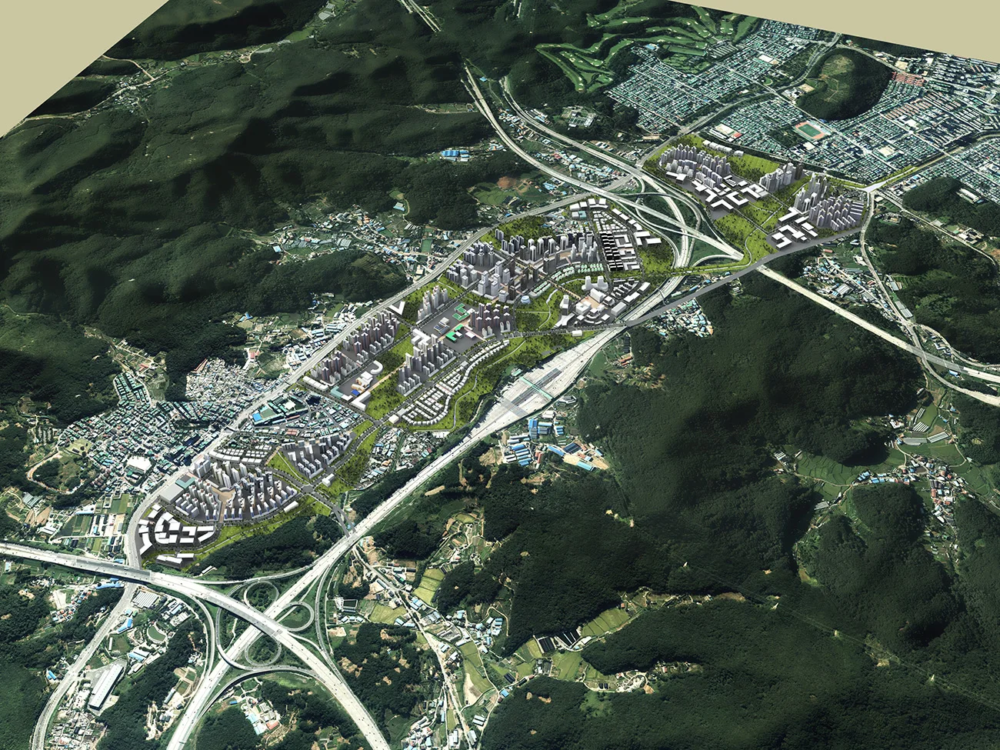
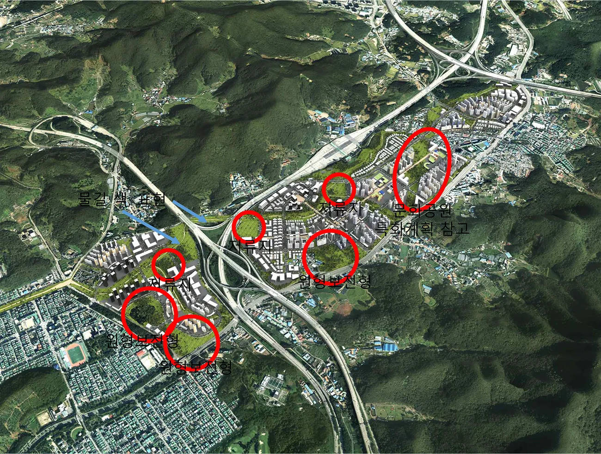
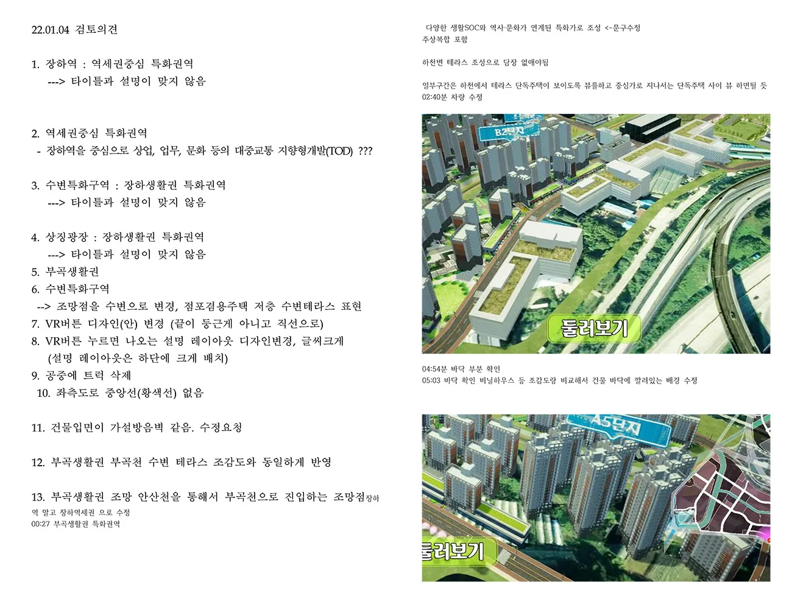

프로젝트 소개
경기도 안산시 상록구 장상동 일대는 수도권 서남부의 미래 주거 핵심지로 주목받고 있는 3기 신도시 개발 예정지 입니다.장상지구는 서울과의 접근성, 기존 산업 및 교통 인프라, 그리고 주거환경의 확장 가능성까지 갖춘 매력적인 입지로 평가받고 있습니다.
이번 프로젝트는 이 장상지구의 개발을 시각적으로 한눈에 전달할 수 있도록 광역도 이미지 와 함께 3D VR용 데이터 제작 까지 함께 진행된 사례입니다.
사업대상지: 안산시 상록구 장상동 일대

프로젝트 개요
위치 : 경기도 안산시 상록구 장상동 일대
의뢰 목적 : 3기 신도시 광역도 이미지 및 VR용 3D 지형 데이터 제작
제작 내용 : 고해상도 광역도 이미지 디자인 지형 및 도시계획을 반영한 3D VR 데이터 구축 개발 컨셉 시각화 및 설명회용 시각자료 제작
1. 모델링 및 앵글 시안 제작
조감도 앵글 001

조감도 앵글 002

조감도 앵글 003

광역도 앵글 검토용샘플 이미지를 보내드렸습니다. 샘플 이미지는 충분히 보내드리고있으니 그 중 결정해주시면 해당 앵글로 작업을 진행하게 됩니다.
2. 광역도 및 모델링 수정사항 검토 및 디테일 강화


조감도 및 모델링에서 수정이 필요한 내용들을 검토해서 보내주시면 해당 수정사항들을 최대한 신속하고 정확하게 반영하여 재발송해드리고 있습니다.
최종 결과물 납품

마무리하며
메이크그룹은 광역도, 조감도, 3D 모델링, VR 데이터 등다양한 개발 프로젝트를 시각적으로 풀어내는 작업을 전문적으로 수행하고 있습니다.
신도시 개발, 도시계획, 산업단지, 복합개발지 등 설명력 있고 설득력 있는 시각자료 가 필요하신 분들은 언제든지 편하게 문의 주세요.
안산 장상지구 프로젝트처럼, 복합적 요구사항도 기획 단계부터 함께 고민하며 풀어드립니다.
감사합니다.
CONTACT
TEL : 070-4127-5640